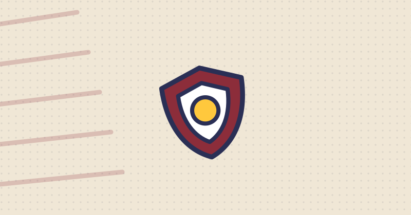

Avengers: Endgame Encore: wanneer draait hij, hoe lang is hij, en vanaf welke leeftijd?
Op woensdag 23 september 2026 keert Avengers: Endgame voor korte tijd terug in de Nederlandse bioscoop, als Avengers: Endgame Encore. Het is de grote slotfilm uit 2019, drie uur en zes minuten lang, en Filmdepot vermeldt er Kijkwijzer 12 jaar bij. Hieronder de datum, de lengte, de leeftijd en wat er wel bij een jonger kind past.

In het kort
| Wat | En dat betekent |
|---|---|
| In de bioscoop | Woensdag 23 september 2026, in Nederland. |
| Hoe lang | 186 minuten, dus drie uur en zes minuten. |
| Leeftijd | Filmdepot vermeldt Kijkwijzer 12 jaar, met de pictogrammen voor geweld en angst. |
| Welke film is dit | Avengers: Endgame uit 2019, de slotfilm van de Infinity Saga. Geen nieuwe film. |
| Regie | Anthony Russo en Joe Russo. |
| Met | Onder anderen Robert Downey Jr., Chris Evans, Mark Ruffalo, Chris Hemsworth en Scarlett Johansson. |
| Te zien in | Onder meer 3D, IMAX, Dolby Cinema en ScreenX, afhankelijk van de bioscoop. |
| Waarom nu | Drie maanden voor Avengers: Doomsday, die op 16 december 2026 uitkomt. |
👪 Let op: dit is geen kinderfilm van drie uur
Twee dingen tellen hier op. De leeftijd: Filmdepot vermeldt bij deze film Kijkwijzer 12 jaar, met de pictogrammen voor geweld en angst. Er wordt stevig gevochten, er gaan helden dood, en er zit verdriet in dat kinderen echt aanvoelen.
En de lengte: 186 minuten aan een stuk, in een donkere zaal. Voor een kind van zes of zeven is dat op zichzelf al te veel, ook zonder de rest. Wil je toch samen kijken en is je kind jonger dan twaalf, dan is thuis kijken met een pauzeknop een eerlijker plan dan de bioscoop.
Wat is Avengers: Endgame Encore precies?
Het is geen nieuwe film. Avengers: Endgame kwam uit in 2019 en was toen het slot van een reeks van tweeentwintig films, de Infinity Saga. Op 23 september 2026 draait diezelfde film een dag lang opnieuw in de bioscoop, onder de naam Endgame Encore. Encore betekent toegift.
Voor wie de film nooit in de bioscoop heeft gezien is dat bijzonder: het grote scherm en het geluid maken bij deze film echt verschil. Voor wie hem wel kent, is het vooral een opwarmertje voor de volgende grote Avengers-film.
Waar gaat Endgame over?
Aan het eind van de vorige film is de helft van al het leven in het heelal verdwenen, door toedoen van Thanos. De helden die over zijn, zitten met de brokstukken. Endgame gaat over wat zij bedenken om dat terug te draaien, en over wat dat hun kost.
Meer weten over wie er allemaal meedoet? Dat staat bij ons op de pagina Wat zijn de Avengers? en in de gids Wie zijn de Avengers?. De volgorde van alle films staat in Alle Avengers-films in de juiste volgorde.
Wat er wel bij een jonger kind past
Is je kind te jong voor deze avond, dan is er genoeg anders. Dit is allemaal geschreven voor kinderen en hun ouders:
- Wie zijn de Avengers? Alle leden uitgelegd, zonder enge beelden.
- Alle Avengers-films in de juiste volgorde, met per film voor wie hij bedoeld is.
- Iron Man, de Hulk en Captain America, ieder op hun eigen pagina.
- De sterkste Avengers actiefiguren, onze keuzes per leeftijd en budget.
Veelgestelde vragen
Wanneer draait Avengers: Endgame Encore in de bioscoop?
Op woensdag 23 september 2026, in de Nederlandse bioscopen. Die datum komt uit de officiele releaselijst van de Nederlandse filmdistributeurs en is gecontroleerd op 14 september 2026.
Hoe lang duurt Avengers: Endgame Encore?
186 minuten, dus drie uur en zes minuten, zonder reclame vooraf. Reken met de reclame mee op ongeveer drieeneenhalf uur in de zaal.
Vanaf welke leeftijd is Avengers: Endgame Encore?
Filmdepot vermeldt bij deze film Kijkwijzer 12 jaar, met de pictogrammen voor geweld en angst. Onder de twaalf raden wij de bioscoop af, vooral door de lengte in combinatie met het donker.
Is dit een nieuwe Avengers-film?
Nee. Het is Avengers: Endgame uit 2019, die een dag lang terugkeert in de bioscoop. De eerstvolgende nieuwe film is Avengers: Doomsday, vanaf 16 december 2026.
Moet je eerst andere films zien voordat je Endgame kijkt?
Het helpt enorm. Endgame is het slot van een reeks, en zonder de films ervoor mis je veel. In onze gids Alle Avengers-films in de juiste volgorde staat welke films er voor deze komen.
Gecontroleerd op 14 september 2026. De releasedatum, de speelduur, de rolverdeling en de Kijkwijzer-vermelding komen uit de officiele releaselijst van de Nederlandse filmdistributeurs. Schuift de datum op, dan passen wij deze pagina aan.